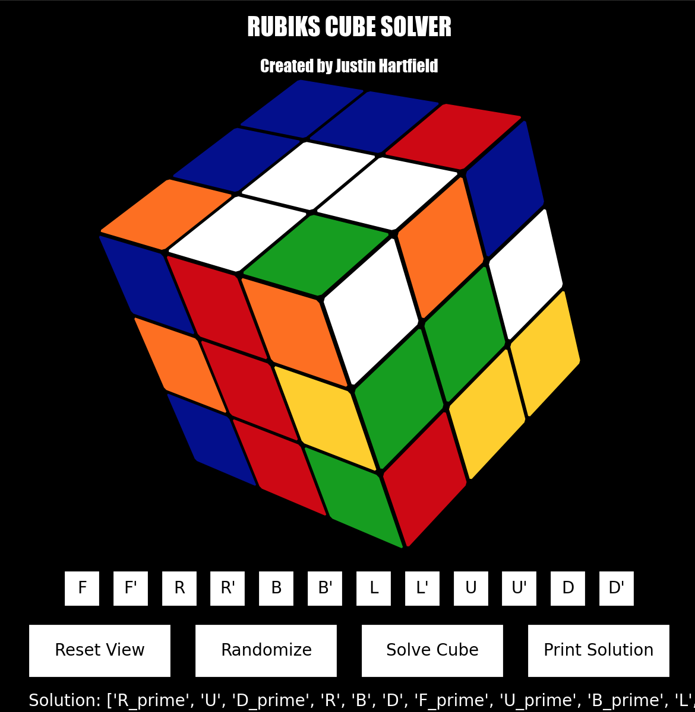

GITHUB LINK:
hhttps://github.com/jhartfie/RubiksCube
Rubik's Cube Solver and Visualizer
This project represents a culmination of my passion for problem-solving
and programming, manifesting in a comprehensive Rubik's Cube solver
developed in Python. At the heart of this application lies an
intelligent algorithm capable of flawlessly randomizing unsolved cubes,
then devising and presenting a step-by-step solution to restore the cube
to its solved state.
Key Features:
Dynamic Randomization: The software starts by
generating a truly random, unsolved configuration for the Rubik's Cube,
ensuring a unique puzzle with each iteration. This feature tests the
solver's robustness and versatility by presenting it with a wide range
of challenges.
Intuitive Solution Representation: After calculating
the optimal solution, the program meticulously prints out a series of
moves required to solve the cube. Each step is clearly articulated,
making it easy for users to follow and understand the logic behind the
solution.
Interactive 3D Visualization: To bring the solution to
life, the project includes a 3D visualization tool that allows users to
interactively explore the cube. Users can rotate the cube through
click-and-hold gestures, offering a hands-on feel of the puzzle-solving
process.
User Customization: Emphasizing user engagement, the
application provides multiple avenues for customization. Users can
manually alter the cube's configuration using keyboard shortcuts or
through an intuitive interface with clickable buttons. This feature
encourages exploration and experimentation, allowing users to test the
solver against manually created puzzles.
Educational Tool: Beyond its capabilities as a solver,
this project serves as an educational platform for those interested in
the mathematics and algorithms behind Rubik's Cube solutions. It
demystifies complex problem-solving techniques and offers insights into
efficient algorithmic thinking. Through this project, I aimed to bridge
the gap between theoretical computer science principles and practical
application, showcasing my abilities in algorithm development, user
interface design, and interactive programming. This Rubik's Cube solver
stands as a testament to my dedication to creating engaging, functional,
and educational software solutions.
PICTURES Rubiks Project:
